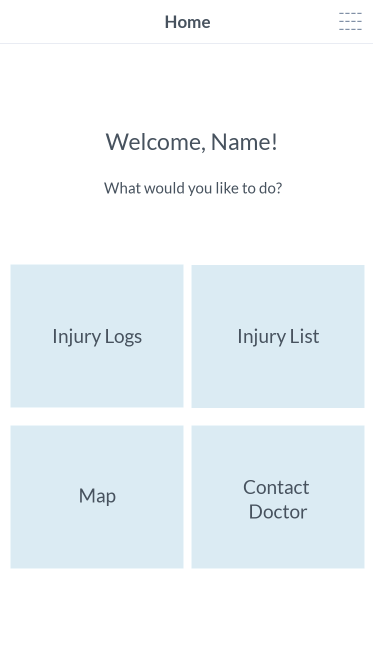
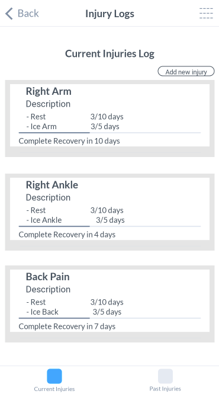
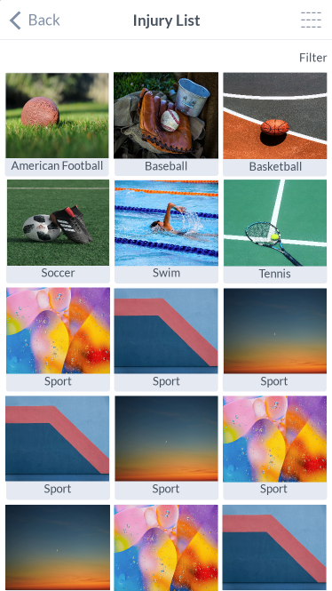

In a team of 4, we developed a medical mobile web app that informs athletes about general injuries, allows them to find doctors and pharmacies, which then allows them to log their
injuries, and submit them to their respective doctors. This project is more coding-focused than design focused.
I got to further improve many skills involving computer language (HTML, CSS, Javascript), version control (GitHub), and digital wireframing (Marvel). I even got to learn a bit
about PostgreSQL and API implementation. I also got to further improve my skills in needfinding, storyboarding, paper prototyping, user testing, and visual design.
We decided to look for and address issues that affect users unlike ourselves. My team, not involved in any sports or athletics, decided to create a medical app that would be
targeted towards everyday athletes. We thought about how athletes’ bodies undergo a lot of strain and are prone to different injuries based on their respective sport.
2. Storyboarding
To get an idea on how our app would be used, we created two somewhat different storyboards showing user case scenarios. Storyboard 1 focuses on the ability to look up home
remedies and log their injuries. Storyboard 2 focuses on the ability to locate a nearby doctor and report the user’s injury logs to them.
3. Digital Paper Prototype/Wireframes
Before making the app, we first needed to create a low fidelity wireframe prototype to determine the visual design and user flow of the app. We used Marvel to create the wireframes.
However with this wireframe, we further refined our design by redesigning the Home, Injury Log, and Injury List pages. We felt that the Home page was too cluttered, so we simplified
it to 4 buttons that lead to the different features of the web app. For the Injury Log page, it was very basic visually, so we separated each entry into their own box, as well as,
having the past and current injuries in seperate tabs for less confusion when there are more entries. For the Injury List page, although the original design of using an interactable
human body as an accessible method of selcting injuries, we felt that it would have been very difficult to implement. Instead, we decided using sports as the selector, which
further allows the user to identify their injuries based on common injuries for the selected sport.



4. Prototype
Over the course of 5 weeks, we developed the app. We used HTML, CSS, Javascript for development, used PostgreSQL for our database, used Github for version control, and deployed
to Heroku for viewing. We also implemented a Google Maps and Yelp API.